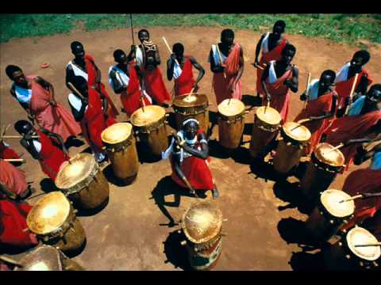
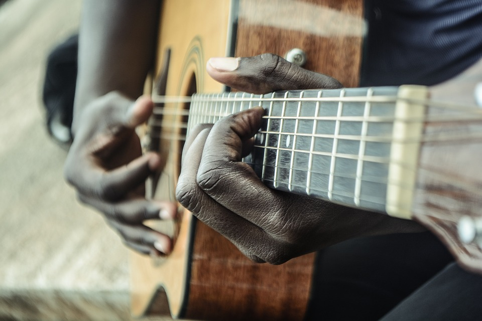

African Music
About African Music
This compilation presents a grassroots approach to the music of the moment emanating from Africa and its Diasporas. Gaining recognition through World Music Network’s ‘Battle of the Bands’ competition – an exciting and revolutionary competition
for up and coming world music acts – all of the artists featured on this album present new, original sounds, most of which you are unlikely to have ever heard before. This album gives you a true snap-shot of African music today, taken straight
from the source, maybe even presenting some of Africa’s music stars of tomorrow! Unlike most other African compilations, which focus on the usual suspects and established royalty of African music, this fresh approach allows you to delve deeper
into the musical treasure chest of African music. Several of the featured artists have gone on to release albums on World Music Network’s award winning artist label, Riverboat Records, to much critical acclaim, including Krar Collective, Monoswezi,Wayo
and Annansy Cissé. In keeping with the theme of music from the source we have included an incredible bonus disc by Sotho Sounds from Lesotho, who quite literally are turning junk into funk.
Influetnial African Music 1
Annansy Cissé rolls the album open with his track ‘Baala’. Here he is joined by Zoumana Tereta whose sonorous sokou (mono-chord violin) solos enter into a riffing question and answer session with Cissé’s electric guitar. Zoumana’s sokou is
also heard on Djama Djigui’s track ‘Djimé Foly’.
Simo Lagnawi is a Moroccan musician whose involvement in an eclectic mix of projects has seen him become a regular on the UK’s live circuit. His track ‘Baniyorkoy’ is anchored by the rich, resonant tones of the guembri (a plucked lute) decorated by vocals,
handclaps and krakeb hand cymbals.

Influetnial African Music 2
Noumoucounda Cissoko is a Sengalese griot who plays his kora viviciaously on ‘Nomou Koradioulou’. Illuminating the string vibrations of another kora master, the track ‘Cora’ features guitarist Giuliano Modarelli alongside Sura Susso’s intimate
playing.
Ethiopian minimalist rockers, Krar Collective contribute their swirling, heady mix on track ‘Ambassel’. Lead-singer Asseda’s spine-tingling voice soars atop the bluesy tones of the krar lyre, kebero drums and a one-string masenqo fiddle.
Influetnial African Music 3
ANerGy Afrobeat contribute their spacious ‘vaudoo-jazz soul-funk’. The big band line-up spotlights their brass section on this track who take freeform solos before the vocals refrain for their ‘Great King Fela’. Later we hear from another
big band, Mozambican Sigauque’s live track ‘Alertos Da Vida’ is an unstoppably positive song with pan-African inspirations.
‘Yaye Boye’ was presented to World Music Network by Teranga Beat, a label working to bring back the life of the 1970s Senegalese super band Le Sahel. This laid-back track features Cheikh Tidiane Tall, Idrissa Diop and Thierno Koite. Also hailing from
Senegal is the Batch Gueye Band whose Baye Fall religious beliefs inform his evocative track ‘M’beugel’.
